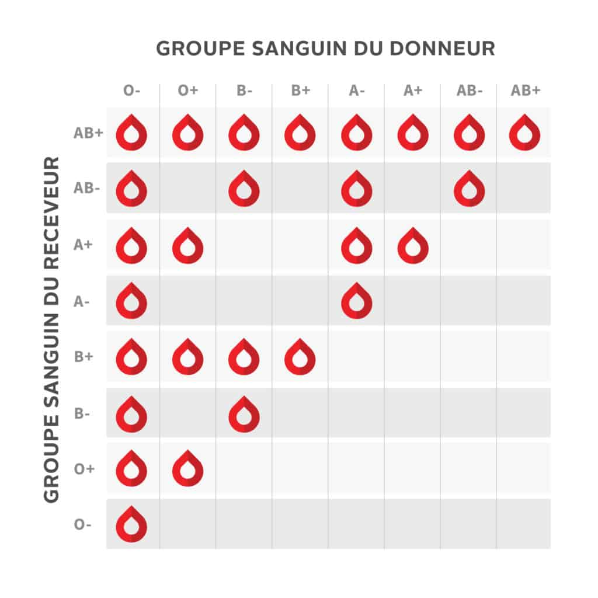

Recensement Sanguin
Section Médicale Seimei · Sunagakure
Objectif
Le recensement sanguin est une procédure médicale fondamentale. Chaque shinobi de Sunagakure doit avoir son groupe sanguin répertorié dans les registres de la Seimei. En cas de blessure grave, connaître le groupe sanguin permet de procéder à une transfusion compatible sans délai.
Protocole de prélèvement sanguin
Le prélèvement suit un protocole strict pour garantir la fiabilité de l’analyse et la sécurité du patient.
- Identification du patient — Vérifier l’identité du shinobi (nom, prénom, unité). Étiqueter le tube de prélèvement avant le geste.
- Préparation du matériel — Rassembler : garrot, compresses stériles, antiseptique, aiguille de prélèvement, tube de collecte, pansement.
- Pose du garrot — Placer le garrot à environ 10 cm au-dessus du site de ponction (pli du coude). Demander au patient de serrer le poing pour faire ressortir la veine.
- Désinfection de la zone — Appliquer l’antiseptique en mouvements circulaires du centre vers l’extérieur. Ne plus toucher la zone après désinfection.
- Ponction veineuse — Insérer l’aiguille biseau vers le haut, à un angle d’environ 20°. Remplir le tube de collecte.
- Retrait et compression — Retirer le garrot, puis l’aiguille. Appliquer immédiatement une compresse stérile et demander au patient de maintenir la pression 2 à 3 minutes.
- Envoi en analyse — Acheminer le tube étiqueté au laboratoire de la Seimei pour détermination du groupe sanguin et du rhésus.
Toujours porter des gants et respecter les règles d’hygiène. Un prélèvement mal réalisé peut causer un hématome, une infection ou un résultat faussé.
Les groupes sanguins
Il existe 4 groupes sanguins principaux définis par le système ABO, chacun pouvant être Rhésus positif (+) ou négatif (−).
O
~44 % de la population
Donneur universel (O−)
A
~42 % de la population
Donne à A et AB
B
~10 % de la population
Donne à B et AB
AB
~4 % de la population
Receveur universel
Répartition des groupes sanguins

Compatibilité transfusionnelle
Avant toute transfusion, il est impératif de vérifier la compatibilité entre le donneur et le receveur. Une transfusion incompatible provoque une réaction hémolytique pouvant être fatale.
- O− est le donneur universel : ses globules rouges peuvent être reçus par tous les groupes.
- AB+ est le receveur universel : il peut recevoir du sang de tous les groupes.
- Le rhésus compte : un patient Rh− ne peut recevoir que du sang Rh−, tandis qu’un patient Rh+ peut recevoir Rh+ ou Rh−.
- En cas de doute, toujours transfuser du O− en urgence.
Tableau de compatibilité

Ce tableau doit être consulté systématiquement avant toute transfusion. Même en situation d’urgence, une vérification rapide peut sauver une vie.
Pourquoi recenser ?
- Permet une transfusion immédiate en cas de blessure grave sur le terrain
- Accélère la prise en charge à l’hôpital — pas besoin de refaire l’analyse
- Identifie les donneurs universels (O−) pour les réserves de sang d’urgence
- Permet de constituer un registre de la Seimei mis à jour et accessible aux médecins de garde
Tout nouveau shinobi doit être recensé dès son intégration à la section. Le formulaire de recensement est disponible auprès des gérants.